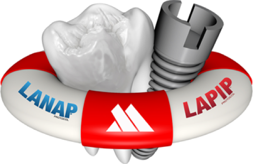

Periodontal pocket reduction therapy: Laser Assisted New Attachment Procedure (LANAP)
Laser gum disease treatment with no cutting or stitches

Dr. Sofia Petrov recommends LANAP for patients with deep periodontal pockets that impede proper cleaning. The LANAP protocol is the only laser periodontitis treatment protocol that has the US FDA clearance for periodontal regeneration (true regeneration) of the attachment apparatus around teeth. This procedure is clinically and histologically proven to regenerate new root surface (cementum), new ligament, and new bone.
Dr. Petrov received intensive training in the LANAP and LAPIP protocol by the Institute for Advanced Laser Dentistry. The surgery is performed with the sole laser specifically designed for the LANAP protocol, the PerioLase MVP-7. There is no cutting or needing stitches with this protocol. Compared to traditional periodontal surgery, patients typically report less pain and discomfort during and after the procedure.
LANAP at a glance
- The only laser periodontitis protocol with US FDA clearance for true periodontal regeneration
- Regenerates new cementum, new ligament and new bone, proven clinically and histologically
- No cutting and no stitches
- Patients typically report less pain and discomfort than with traditional surgery
- Performed with the PerioLase MVP-7, the sole laser designed for the LANAP protocol
This patient friendly procedure helps get their gums healthy again comfortably and without fear. Dr. Petrov's preference for LANAP™ reflects its efficacy in managing periodontal disease while prioritizing patient comfort and oral health.
Institute for Advanced Laser Dentistry: LANAP protocol, laser gum disease treatment video.